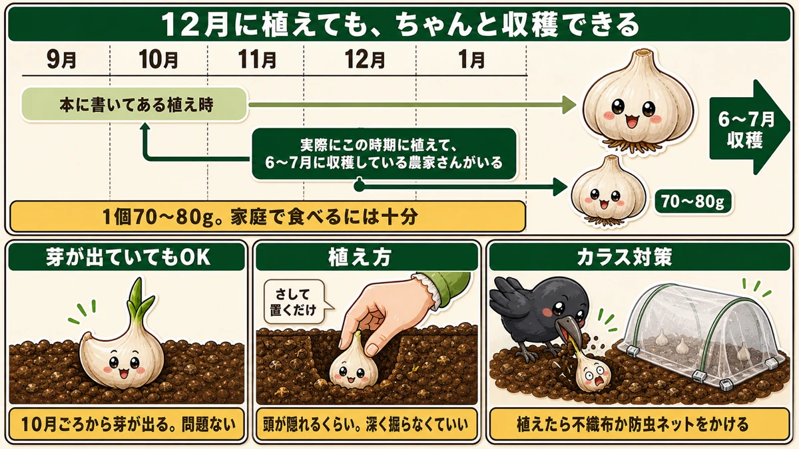
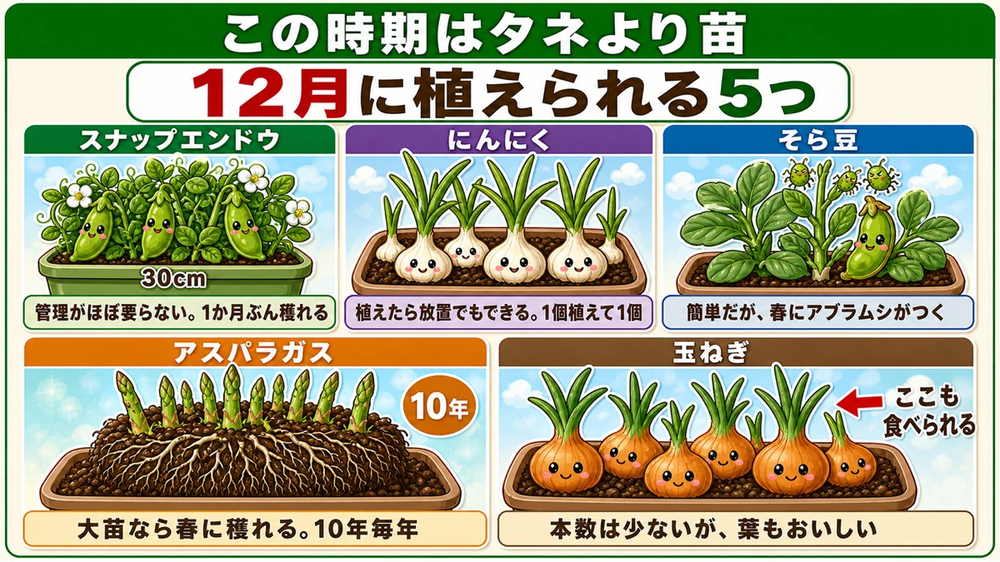
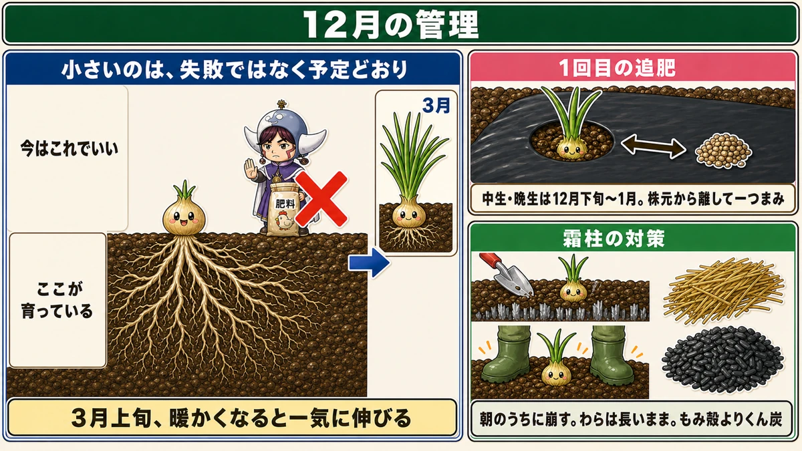
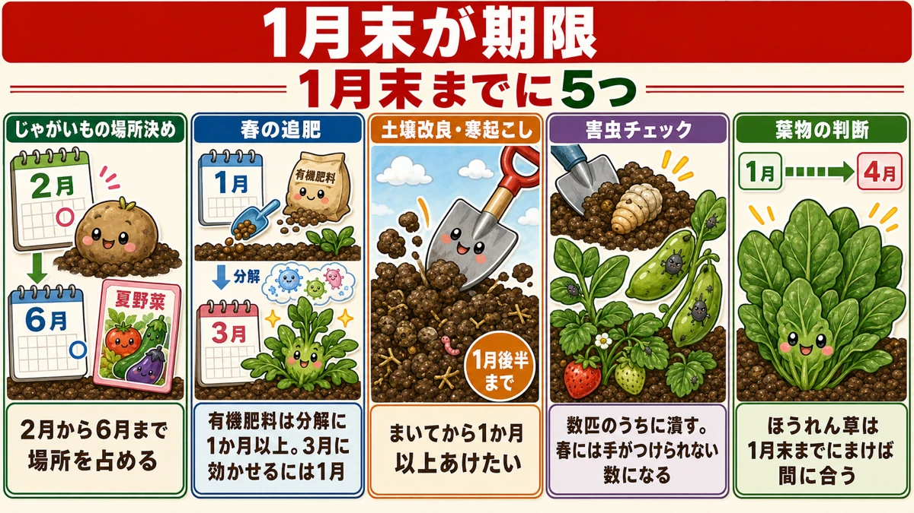

Garlic planted in December still works 🧄 What to plant this month
🗨️ "There can't be anything to do in December."
🗨️ "I missed the garlic. Do I wait a year?"
🗨️ "Is there anything worth doing over winter?"
Hello, I'm Eiko. Eight years of growing vegetables organically and without pesticides, and a teaching licence in science.
The monthly instalment — December.
The point, up front:
Garlic planted in December still works.
"Surely it's an autumn crop?" — that's what I thought, and it's what the books say. But there are growers planting in December and January and harvesting normally in early summer. Three or four years running. Let's start there ☺️
The garden this month
Honestly, December is a thin month for planting — so this article has a different shape from the others:
- what you can still get in (more than you'd think)
- looking after what's already planted
- what must be finished by the end of midwinter, or it costs you in summer
One rule that runs through all of it
Plants beat seed in December. It's too cold for reliable germination, and waiting for seedlings that never appear can swallow a whole month. Buying plants skips that step.
Garlic in December

What this diagram says （図解の文字）
- Planted in December, and still harvested properly
- The planting window the books give ／ growers who actually plant in this period and harvest in early summer
- 70–80 g per bulb — plenty for home use
The grower I spoke to plants every year in December or January, for a simple reason: autumn is too busy with other work. And harvests in early summer, as normal.
How big do they get?
About 7–8 g per clove and 70–80 g per bulb. In their words, "plenty good enough" — and for cooking at home there's nothing lacking about that size.
Three or four years running, which means it isn't a fluke.
Sprouted cloves are fine
Kept until December, seed garlic starts sprouting. That's not a problem. This grower plants leftover stock, sprouts and all, exactly as it is. A practice that started as "better than throwing it away" and has run for years.
Planting is almost too simple
Push each clove in, pointed end up, until the top is just covered. No need to dig — rake soil over afterwards and the depth comes out right.
But go easy on the fertiliser
The point they repeated: "Trying to grow big garlic by adding feed gives you too much nitrogen, and that brings spring rot."
And: oversized garlic rots more readily. For a show, fine. For eating, 70–80 g is better — and it keeps longer.
The line that stayed with me: "You can add what's missing. You can't take out what's excessive."
Fertiliser doesn't subtract. Start light and top up as you see how it's growing.
Five things you can still plant in containers

What this diagram says （図解の文字）
- Five things you can plant in December — plants rather than seed at this time of year
- Sugar snap peas — 30 cm pot — almost no management; about a month's worth
- Garlic — plant it and leave it; one clove gives one bulb
- Broad beans — easy, but aphids arrive in spring
- Asparagus…
- Sugar snap peas — hardly any management. A 30 cm pot yields about a month's worth, and they lose quality fast after picking, so growing them has real value
- Garlic — plant it and essentially leave it. December planting is fine; one clove gives one bulb, so don't expect quantity
- Broad beans — easy, but expect a lot of aphids in spring. 10–20 plants in a container
- Asparagus — buy a three-year crown. Planted now, you can cut in spring. Only about three spears from a 30 cm pot at first, but it crops for a decade and increases each year
- Onions — only three to six per container and on the harder side. The green tops are good eating too, so a few plants have their own appeal
Looking after what's already in

What this diagram says （図解の文字）
- December management
- Small isn't failure — it's the plan. This is as it should be ／ it's growing here ／ × fertiliser
- In early spring, warmth arrives and it shoots away
- First top-dressing — maincrop onions, late December to January; a pinch, away from the plant
- Frost heave — break it in the morning
Onions: the first feed
- Poultry manure is easy — fast and lasting. Bokashi feed also works
- A light pinch, set away from the base of the plant
- Draw a little soil over it if you can
Don't feed because they look small
December onions make almost everyone anxious. They did me.
They're fine. Top growth isn't the point now — underground the roots are establishing, ready for spring — and in early spring they shoot away.
Small isn't failure. It's the plan. Feeding now invites disease.
Frost heave
Repeated frosts lift plants out of the ground, especially in the planting holes of mulch. A lifted plant blows over or dries out at the roots.
- Break the ice in the morning, so the day's sun clears it
- Press down either side of the plant with a foot — it crushes the ice and beds the plant in at once
- Straw, rice husk or husk charcoal around the base
Lay straw in full lengths along the bed, not chopped — chopped straw blows away.
Husk charcoal beats plain husk: being black it absorbs sunlight and raises soil temperature, and it supplies minerals. It's alkaline, so don't overdo it.
And if the plants are already well grown, you don't need to mulch at all — do the small ones only.
Five things to finish before midwinter ends

What this diagram says （図解の文字）
- The end of midwinter is the deadline
- Decide where the potatoes go — they occupy that ground from late winter to early summer
- The spring feed — organic fertiliser takes over a month to break down, so to act in early spring it has to go in now
- Soil improvement and winter digging — by the second half of midwinter
- Decide where the potatoes go — that ground is committed from late winter to early summer, so plan the summer crops around it
- Put in the spring feed — organic fertiliser needs over a month to break down, so to be working in early spring it goes in now
- Finish soil improvement and winter digging
- Check for pests — dig out pupae; squash the aphids on broad beans while there are few
- Order seed while the choice is good
The science: what garlic does in winter is grow roots 🔬
Which explains why a December planting works at all.
Garlic puts very little into top growth over winter. It builds roots. The leaves you can see barely change; the root mass changes enormously.
And the bulb is filled in spring, using what those roots can take up. So the question isn't how long has it been in the ground — it's how much root it built before the warmth arrived.
A clove planted later has fewer weeks, and roots grow whenever the soil isn't frozen, including through mild winter spells. It ends up with less root than an autumn planting, and enough — which is exactly what a 70–80 g bulb is ☺️
To sum up
- ✅ Garlic planted in December still crops — about 70–80 g a bulb
- ✅ Sprouted cloves are fine
- ✅ Push them in pointed end up, just covered
- ✅ Light on fertiliser — excess nitrogen brings spring rot, and big bulbs keep badly
- ✅ Net against crows after planting
- ✅ Plants beat seed this month
- ✅ Containers: sugar snaps / garlic / broad beans / asparagus crowns / a few onions
- ✅ Onions get their first feed — a pinch, away from the base
- ✅ Small onions are the plan, not a failure
- ✅ Break frost heave in the morning; press plants back in
- ✅ Straw in full lengths; husk charcoal beats plain husk
- ✅ Before midwinter ends: potato ground, spring feed, digging, pest check, seed orders
- ✅ Garlic spends the winter building roots, not leaves
You don't have to do all of it. If you have garlic sitting in a kitchen drawer, go and push a few cloves into the ground. It is genuinely not too late 🧄
Thank you for reading!